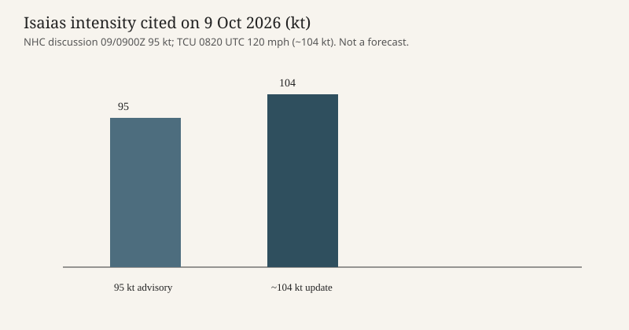

Gulf of Mexico · weather · 9 October 2026
The National Hurricane Center measured Isaias at 120 mph and forecast landfall on the northern Gulf Coast tonight or early Saturday

What is agreed across desks
On Friday 9 October 2026 the National Hurricane Center in Miami said Hurricane Isaias had become a major hurricane. A tropical cyclone update issued at 7:20 a.m. CDT, 0820 UTC, said Air Force Reserve Hurricane Hunter data showed maximum sustained winds of 120 mph, 195 km/h, with a dropsonde minimum central pressure of 959 millibars, 28.32 inches. The same update placed the center near 27.0N 87.6W, about 240 miles south of Pensacola, Florida, and about 170 miles south-southeast of the mouth of the Mississippi River, moving north-northeast at 15 mph.
Earlier the same morning, discussion number 11 at 4:00 a.m. CDT had estimated 95 knots, about 110 mph, at 0900 UTC near 26.4N 88.0W, with a central pressure then given as 963 millibars in the tropical weather discussion. The later aircraft update is the newer measurement. Both products said the storm was moving toward the northern Gulf Coast and that landfall was expected inside the hurricane warning area Friday night or early Saturday. The discussion said the best intensity forecast at landfall was a high-end Category 2, while warning that the exact wind speed did not change the expected surge, wind, and flood hazard.
The Saffir-Simpson scale treats 111 mph as the bottom of Category 3, the threshold the National Hurricane Center uses for the phrase “major hurricane.” A 120 mph reading clears that line. Category describes a one-minute sustained wind, not surge and not rainfall. The discussion’s key message was a life-threatening storm surge from the mouth of the Mississippi River to the Suwannee River in Florida, and heavy rain over the central Gulf Coast and the Southeast through the weekend, with flash, urban, and river flooding possible.
Associated Press copy published Friday described preparations along the Alabama and Florida coasts and said the center was expected to come ashore somewhere between Mobile Bay and Choctawhatchee Bay. An earlier AP story, filed when the storm was still quoted at 105 mph, used the same coastal corridor and the same late-Friday landfall window. Reuters’ U.S. desk listed the strengthening storm and Gulf Coast preparations among Friday’s items. Those desks are describing the same system the Hurricane Center is measuring. They are not an independent wind observation.
What is only a forecast or a quote
Landfall location is a forecast, not a completed event. The 0820 UTC update did not announce that the center had crossed the coast. The discussion said a turn toward the north was expected later on Friday and that slight weakening was possible before landfall while the storm remained dangerous. A later landfall wind of 100 mph or 120 mph would both be consistent with that wording. Rainfall ranges in earlier products — 4 to 8 inches cited Thursday night for southern Alabama, the Florida Panhandle and Big Bend, and southwest Georgia, with a separate AP mention of local amounts up to 15 inches — are forecasts, not gauges.
Evacuation orders, gas lines, and boat-securing described in AP copy are reported local actions. They are not a census of who left. The name Isaias is the ninth Atlantic system of the 2026 list in the Hurricane Center’s numbering (AL092026). Calling it the first hurricane of the Atlantic season is a claim in AP copy that this dossier does not re-audit against every earlier advisory.
Mechanism a reader needs
A hurricane warning means hurricane conditions are expected in the warned area, generally within 36 hours. It is not a statement that every point in the warning will see the eyewall. The warning cited Friday morning ran, in an earlier advisory, from Ocean Springs, Mississippi, to the Bay-Gulf County line in Florida. Surge is driven by the wind field, the angle of approach, the shape of the bays, and the tide, which is why Pensacola Bay can be in the hazard zone even if the center makes landfall tens of miles away. Aircraft reconnaissance fixes pressure and wind; satellites fix the cloud pattern. When those disagree, the Hurricane Center says which instrument it is using. On Friday morning it said the 120 mph figure came from the aircraft.
The Gulf in early October is still warm enough for intensification. The discussion said Isaias was over very warm, deep water and could strengthen for about another 12 hours. That is a physical description of the ocean, not a political claim about climate. El Niño and background warming were mentioned in a later AP brief as competing influences on the storm’s future. Those are hypotheses about the larger pattern. They are not the 0820 UTC wind measurement.
What this story is not
It is not a report that the storm has already made landfall. It is not a death toll. It is not a comparison with Katrina or Michael except as history a reader may already know: those names describe different years, different tracks, and different building codes. The photograph on this page is a 2022 beach panorama at Pensacola, chosen because it shows the kind of coast inside the warning area without showing a person in distress or a wreck that has not occurred. The chart below repeats only the two intensity figures the Hurricane Center published on Friday morning.

Source articles and scores
| Outlet | Headline | T | N | C |
|---|---|---|---|---|
| National Hurricane Center | Hurricane Isaias Tropical Cyclone Update — ISAIAS BECOMES A MAJOR HURRICANE | 98 | 0 | 100 |
| National Hurricane Center | Hurricane Isaias Forecast Discussion Number 11 | 97 | 0 | 100 |
| Associated Press | Isaías se fortalecerá a huracán de categoría 3 o superior al acercarse a EEUU | 90 | 0 | 94 |
| Associated Press | Hurricane Isaias strengthens as it nears US Gulf Coast | 88 | 0 | 92 |